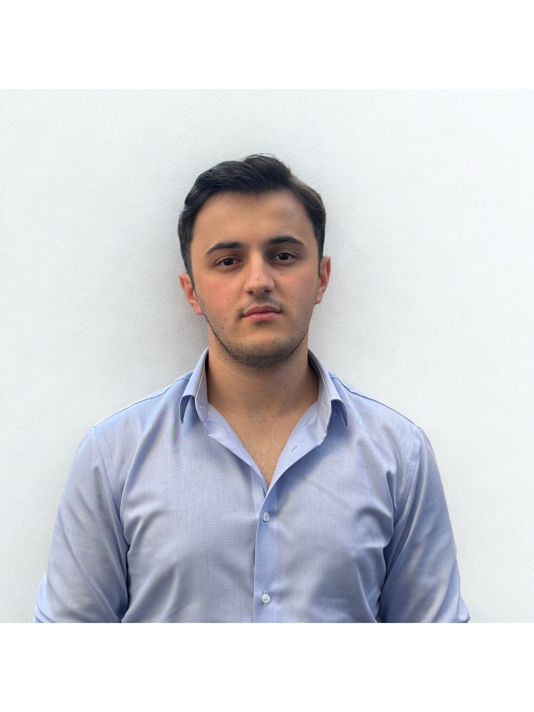
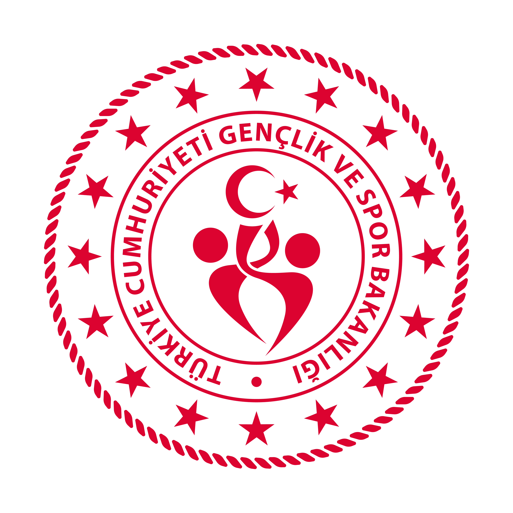
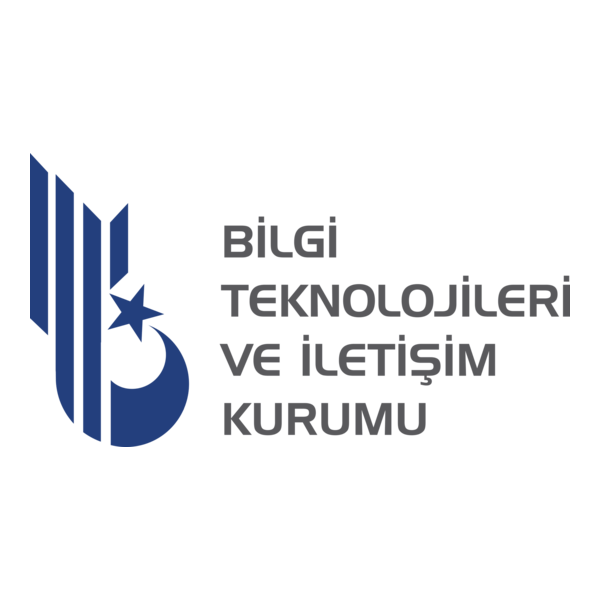

Gerçek zamanlı veri
CANbus, UART, sensör okuma, telemetri ve düşük gecikmeli veri akışı.
AIoT Engineer
Computer Engineering
Gömülü sistemler, gerçek zamanlı haberleşme ve yapay zekayı fiziksel sistemlere bağlayan uçtan uca mühendislik çözümleri geliştiriyorum.

Hicaz Hyperloop takımında yazılım ve haberleşme biriminde takım liderliği yapıyor, CANbus, telemetri, pod ve yer istasyonu yazılımları üzerine çalışıyorum.
TÜBİTAK 2209-A ve Karabük BAP destekli otonom hidroponik tarım projesinde Raspberry Pi, Arduino, sensör kontrolü, Firebase, görüntü işleme ve kendi veri setimle eğitilen AI modelini bir araya getirdim.
Sektörde beni ayrıştıran taraf, yalnızca web ya da yalnızca model geliştirme değil; sensörden gelen veriyi anlamlandırıp donanımı güvenli biçimde kontrol eden AIoT mimarileri kurabilmem.
CANbus, UART, sensör okuma, telemetri ve düşük gecikmeli veri akışı.
Pompa, röle, LED, pH/EC dozajlama ve fail-safe karar döngüleri.
EfficientNet-B0, görüntü işleme, veri seti hazırlama ve edge uyumlu modeller.

Bilgisayar Mühendisliği (%100 İngilizce)
Karabük Üniversitesi Yabancı Diller eğitimi
Raspberry Pi ve Arduino Mega arasında UART haberleşmesi, sensör-pompa kontrolü, Firebase destekli izleme, pH/EC optimizasyonu ve bitki hastalık tespiti için görüntü işleme modeli geliştirildi.
Projenin akademik çıktıları için aktif olarak makale ve rapor yazımı üzerinde çalışıyorum.


Pod ve yer sistemi arasında güvenilir veri akışı için CANbus protokolü, Raspberry Pi üzerinde telemetri verilerinin Go ile işlenmesi ve WebSocket üzerinden canlı haberleşme mimarisi üzerine çalışıyorum.
Yazılım ve haberleşme tarafının yanında 3D tasarım, prototipleme ve üretim süreçleriyle de ilgileniyorum.
QGroundControl üzerinde C++ eklentileri ve özel UI modülleri geliştirerek düşük gecikmeli veri akışına uygun kontrol istasyonu deneyimi tasarlandı.
Godot Engine ve ekip çalışmasıyla kısa sürede oynanabilir prototipler geliştirildi; oyun mekaniği, UI ve üretim disiplini pratiği kazanıldı.
T.C. Gençlik ve Spor Bakanlığı bünyesinde gönüllü genç kamp liderliği, grup koordinasyonu ve kamp içi liderlik sorumlulukları.
Hicaz Hyperloop takımında CANbus, telemetri, C++ GUI ve haberleşme mimarisi.
Uzaktan yürütülen akademi programında savunma teknolojileri ve mühendislik odağı.
Teknik etkinlikler, dijital iletişim akışı ve öğrenci topluluğu koordinasyonu.
Python kod çıktıları, mantık hataları, performans iyileştirme ve TR-EN değerlendirme.
Go ile REST API, işçi operasyon takip otomasyonu, Postman ve veritabanı entegrasyonu.
Flutter, mobil uygulama geliştirme, teknoloji girişimciliği ve app jam deneyimi.
Her kategoride teknolojiyi nerede kullandığımı veya hangi çalışma üzerinden öğrendiğimi kısa notlarla belirttim.
Sensör, röle ve pompa kontrolü.
Qt, GUI ve gömülü geliştirme.
Hicaz Hyperloop haberleşme mimarisi.
Canlı izleme ve konfigürasyon.
REST API ve WebSocket telemetri.
+3 yıldır aktif versiyon kontrolü.
Kontrol ve izleme arayüzleri.
Bitki görüntü işleme akışları.
AI, veri ve Raspberry Pi servisleri.
Derin öğrenme ve transfer learning.
AIoT veri köprüsü ve telemetri.
Tip güvenli web arayüzleri.
Responsive portfolyo ve teknik arayüzler.
Servisleri taşınabilir geliştirme ortamına alma.
Realtime veri, konfigürasyon ve izleme.
KARDEMIR REST API ve telemetri WebSocket hattı.
Portfolyo ve proje sunum sayfaları.
İstemci tarafı etkileşim ve arayüz mantığı.
Firebase bağlantılı izleme panelleri.
Veritabanı bağlantısı ve tablo yönetimi.
REST API testleri ve dokümantasyon.
Bileşen tabanlı canlı veri arayüzleri.
Frontend veri modelleri ve güvenli geliştirme.
Lokal web ve veritabanı geliştirme ortamı.
Bitki hastalık sınıflandırma mimarisi.
Hızlı derin öğrenme prototipleme.
ML, pandas ve veri bilimi eğitimleri.
Zaman serisi ve tahmin mimarileri.
Görüntü işleme ve görsel analiz.
Veri seti hazırlama ve tablo analizi.
Transfer learning ve model eğitimi.
Model denemeleri ve karşılaştırmalar.
Sensör, pompa ve röle kontrolü.
Hyperloop pod haberleşme mimarisi.
Hidroponik kontrol döngüsü.
Düşük güç IoT ve sensör uygulamaları.
Raspberry Pi servisleri ve sistem ortamı.
Devre tasarımı ve mikrodenetleyici simülasyonu.
Veri köprüsü ve telemetri işleme.
Raspberry Pi-Arduino haberleşmesi.
Kendi 3D yazıcımda prototip üretimi.
Dilimleme, profil ve baskı hazırlığı.
3D modelleme ve teknik görselleştirme.
Flutter geliştirme dili.
UI/UX ve arayüz planlama.
Mobil uygulama prototipleri.
Game Jam 2D oyun geliştirme.
C++ GUI ve QGroundControl özelleştirme.
 Intermediate Machine Learning
Intro to Machine Learning
Pandas
Intermediate Machine Learning
Intro to Machine Learning
Pandas
 Google Project Management
Google Project Initiation
Google Project Planning
Google Project Management
Google Project Initiation
Google Project Planning

T.C. Gençlik ve Spor Bakanlığı belgesi. Görseli açmak için tıklayın.

BTK Akademi sertifikası. Görseli açmak için tıklayın.
BTK Akademi sertifikası. Görseli açmak için tıklayın.
BTK Akademi sertifikası. Görseli açmak için tıklayın.
BTK Akademi sertifikası. Görseli açmak için tıklayın.